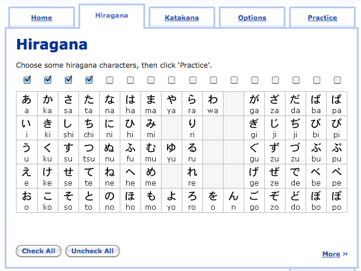
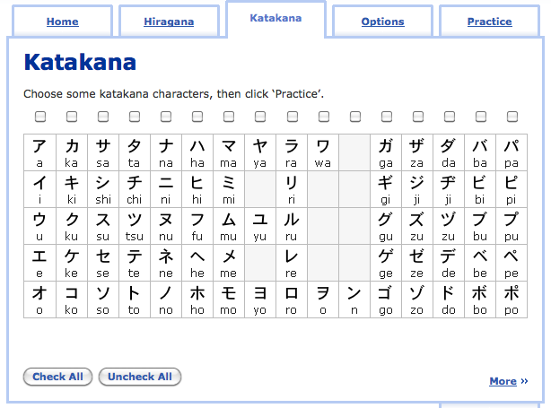
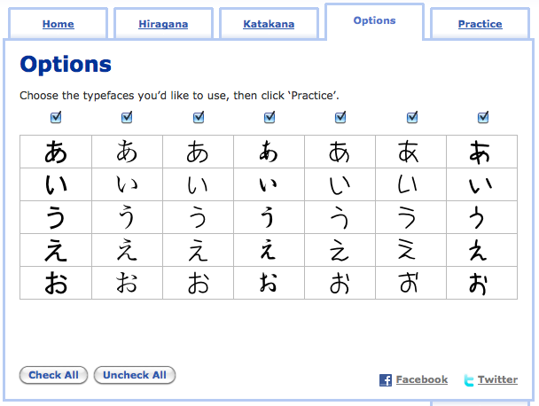
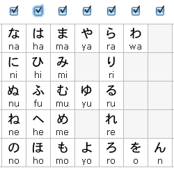
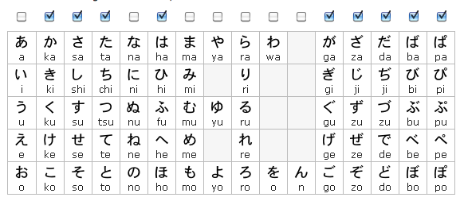

How To Study Hiragana
“It always seems impossible until it’s done.” – Nelson Mandela
Anki isn’t the only thing we’ll be using to study hiragana. There are a ton of other great resources as well, including some from TextFugu, that will help you to learn hiragana very quickly and efficiently… Hopefully it will make things fun for you as well (progress is always fun!).
You’ve already started by learning how to recognize your first five to ten hiragana using Anki (and in the process, you kind of learned how to use Anki as well). While Anki will indeed be a big part of your hiragana learning career, there are other resources you should be using as well. Instead of throwing a bunch of resources at you and hoping for the best, I’ve created a sort of study schedule. The schedule isn’t time based, which means you could complete this in one day, or one month, or one year. Instead, it’s based on accomplishments. So, when you finish X, you should start on Y. When you finish Y, you should start on Z, etc.
I’m not saying this is the only way to do it, and some of you who are more “advanced” at learning Japanese (or those of you who only need a refresher on hiragana) will probably want to do something a little different, and that’s okay. This is only one way to do it (though I think it’s a great one), and if you follow along, and complete everything in order, you’ll come out the other end knowing hiragana more than well enough to move on to the next chapter.
If I were you I’d bookmark this page (or copy and paste the list into your Japanese language log) so you can quickly and easily access it whenever you want to start studying. The easier it is to know what you need to do next, the more likely it is you’ll study when you don’t want to! :)
First 10 Hiragana: あいうえお、かきくけこ
1. Study your first ten hiragana using Anki – あ、い、う、え、お、か、き、く、け、こ. One thing you’ll want to do from here on out is to delete whatever you put under “Session Limit (Questions)” within the timeboxing tab (if you don’t know what this is, go back to the previous page). You need to do this because it will also now be giving you items to review, depending on how you did. You’ll want to study on Anki until you reach the kana こ. Think of it as part of your training to watch out for this kana (you’ll probably end up learning it in the process). After you answer こ, stop studying on Anki and move on to the next step.
2. Go to Drag n’ Drop Hiragana, and only drag the first ten hiragana (a-column and ka-column) into the right spaces. By only doing these ones, you’ll have to find the right hiragana amongst all the other hiragana (helping you differentiate them) and secondly force you to remember what they look like. Try this twice (refresh to restart) and see if you can do it faster the second time!
3. After you feel so-so about the first 10 kana on Anki / Drag n’ Drop, it’s time to put some of that into practice. Complete this worksheet and try to cheat as little as possible.
Hiragana 11-20: さしすせそ、たちつてと
Of course, it’s important that you review the kana you just studied while you’re learning your new kana, so we’ll make sure to do that here.
1. Start by writing out the ten kana that you know and try to do it from memory (starting with あ and ending with こ). I’ve even created a worksheet for you to make it easy. Start in the top left corner, and write (horizontally) あ, い, う, え, お in the boxes provided. Then, go to the next row and put in か, き, く, け, こ. If you have to, feel free to use your hiragana chart to help you (but try not to!).
2. Now write out the ten new kana (sa-column and ta-column). These are the kana you’re about to study. Notice there’s a “dakuten” section to the right. You can ignore that for now. From your “Personal Kana Sheet” pinpoint four new kana you think you can learn and recognize (right now). They have to be kana you don’t know, but they can come from anywhere in the first twenty kana. Perhaps they have a shape that’s easy to remember, or perhaps something just sticks. The important thing is you try to learn to recognize four new kana right now before moving on to the flashcard part. You don’t have to be able to write them, just recognize.
3. Go ahead and open Anki back up again and start up the hiragana list. If you haven’t had to already, you’ll might have to tell it to “review early” (since it tries to tell you when to study things). That’s fine if you do, it won’t hurt anything (as long as you aren’t moving faster than you can learn). It’ll review the kana you didn’t know too well before, and then move on to the new kana. Stop studying when you reach the kana と (to). Once again, take advantage of looking out for it and learn the kana while doing so.
4. Visit RealKana and check the four columns of hiragana that you know already.

Click on the katakana tab, and make sure everything here is unchecked. You don’t want to be learning katakana quite yet.

If you’re feeling adventurous, click on the “Options” tab and check all the different fonts. Just like English, there are different fonts and writing styles out there. Some things are slightly different depending on the font, and this is one way to get used to a lot of the different things out there.

Now, use Realkana to go through the first 20 hiragana characters until you feel comfortable with them (i.e. you can recognize all of them). Even better if you can do it with all the different fonts, too.
5. After you feel fairly decent about the first twenty kana (especially the new stuff) complete this worksheet to really solidify that knowledge, and practice writing them.
Hiragana 21-30: なにぬねの、はひふへほ
You’re actually past the halfway point for the “main” hiragana now! Just keep going, you’re making good progress!
1. Write down your ten new hiragana on your “Personal Kana Sheet” with the other hiragana, so you can have them for reference. Choose two of them from each set of five (na-column and ha-column) and try to remember what they are. Just like last time, all you need to be able to do is recognize them. Once you think you can recognize four of them, move on to the next step.
2. Open up Anki, and complete the next ten hiragana, up to ほ. You’ll have some review from previous kana too, which is good. Make sure you’re honest with yourself in terms of what you can and can’t recognize!
3. After feeling okay about the next ten, complete this work sheet, which helps you practice reading and writing the individual kana.
4. Visit RealKana and check the six columns of hiragana that you know already. Click on the katakana tab and uncheck anything that’s checked (you don’t want to learn katakana yet). Finally, try out the different hiragana fonts under “Options.” Now, hit the practice tab and go through the practice a few times, until you feel good about reading this kana (you should be pretty good, by this point, actually!).
Hiragana 31-46: まみむめも、やゆよ、らりるれろ、わを、ん
You’re almost there! In terms of the “main” hiragana, this is the last of it. After this, you’re just learning things you already kind of know (like dakuten and combo hiragana), which means you’re pretty much all the way there. Just a few loose ends to tie up after this.
1. Write down your new hiragana on your piece of paper, along with the romaji, for reference. Pick out five new kana you think you can recognize and try to memorize them right now (don’t spend much time). Just pick the five easiest shapes and try to be able to associate the sound with them. When you think you can recognize five new kana, move on to the next step.
2. Start up Anki and study until it gets you to ん. When you get to ん, stop and move on to the next step.
3. Go to RealKana, and this time only check columns な, は, ま, や, ら, & ん. You’re learning more this round, so I want you to focus it a little more on recent kana. Here’s an image to show you what to check (make sure you uncheck the katakana columns in the katakana tab too, if you need to).

Go through these a couple of times until you feel comfortable with them.
4. Complete this worksheet, which focuses on ま through ん columns.
5. Head on back to Drag n’ Drop Hiragana. In theory, you should be able to complete the puzzle now (rather than just little bits of it). How fast can you get it done? Record your times and see if you can get done in under three minutes. If you’re really good, you might be able to get it done in under two, but don’t fret if you can’t.
Dakuten: がぎぐげご、ざじずぜぞ、だぢづでど、ばびぶべぼ、ぱぴぷぺぽ
In theory, these should be easier than what we’ve been doing so far. You already know the main characters (which dakuten use) and all you have to do is know what little symbol to put next to them (hint: usually it’s a quotation mark). That being said, I’m going to give you more things than normal to study in this section. You should be better at studying hiragana by now, and you should also know the symbols above (minus the dakuten part). I won’t say this section is easy, but it should be easier than before.
1. Start up Anki and go through the dakuten hiragana. Don’t remember what dakuten are? You can get a refresher, here. You’ll want to stop when you get to ぽ (po).
2. Complete this worksheet. This worksheet’s goal is to help you remember what a column will change to when dakuten are added to it. Focus more on remembering that “S” goes to “Z” or “T” goes to “D” rather than focusing on individual kana themselves.
3. On RealKana, let’s practice dakuten hiragana as well as the original kana from which the dakuten came. Check the か, さ, た, は, が, ざ, だ, ば, & ぱ columns. Here’s an image to illustrate:

Make sure you uncheck any katakana columns that might be checked as well. Go through the drills like this until you feel pretty comfortable telling them apart. Can you write them out on your own now? If I said things like…
What do “K-sounds” turn into?
“G-Sounds”
What do “H-sounds” turn into (two answers here)
“B & P Sounds”
What do “D-sounds” turn back into?
“T-Sounds”
What do “Z-sounds” turn back into?
“S-Sounds”
Could you answer all these questions? If not, be sure to drill RealKana a little bit more so you can learn the differences. Really, just learning these differences is the secret to learning dakuten, so if you can do that, you can do dakuten!
Combination Hiragana: きゃ、しゃ、ちゃ、にゃ、ひゃ、みゃ、りゃ、ぎゃ、じゃ、ぢゃ、びゃ、& ぴゃ Columns
You probably remember a little bit about “combo-hiragana” from the last chapter. It might not have made too much sense at that point, but now we’re going to actually see it and use it in action. Sometimes, certain kana can be written smaller. When placed next to another kana, it can modify the way it sounds. Don’t worry, though, because the modifications actually make a lot of sense. For example:
き + small ゃ = きゃ (which sounds like kya). It’s almost like saying KIYA, but you drop the “i” sound.
び + small ゅ = びゅ (which sounds like byu). It’s just like BIYU, but you drop the “i” sound.
し + small ょ = しょ (which sounds like sho). It’s like SHIYO, but you drop the “i” sound.
You’ll understand better when you start using the flashcards, too (since they have audio). There are other combo hiragana as well, though you’ll learn about them more when you move on to katakana. For now, though, it’s pretty easy and straight forward, I think.
1. Fire up your good ol’ buddy Anki, and go through all the combination hiragana. This should take you through to the very end of the hiragana deck. You should know all the characters being used at this point (even in the combo hiragana), so use this opportunity to review as well. Be honest with what you did and didn’t know, too, because when you finish this deck, there will still be review for you to finish, depending on what you clicked.
2. Now let’s practice writing them. Remember, the やゆよ for these are small ゃゅょ. If you don’t write them small, they are just regular sized, and pronounced normally. It’s the difference between:
きや (kiya) vs きゃ (kya)
Those are two different sounds and you can’t switch them out with each other. The difference is important! Use this worksheet to practice:
At this point, you should feel at least so-so about hiragana (and possibly fairly good). You don’t need to be perfect, nor do you need to be at 100%. That’s definitely not expected at this point. It’ll take a while before you read hiragana nice and fluidly, but luckily there’s going to be plenty of practice for that as you progress through future chapters of TextFugu. I’ll also make a point of giving you opportunity to practice hiragana specifically as you go through the lessons.